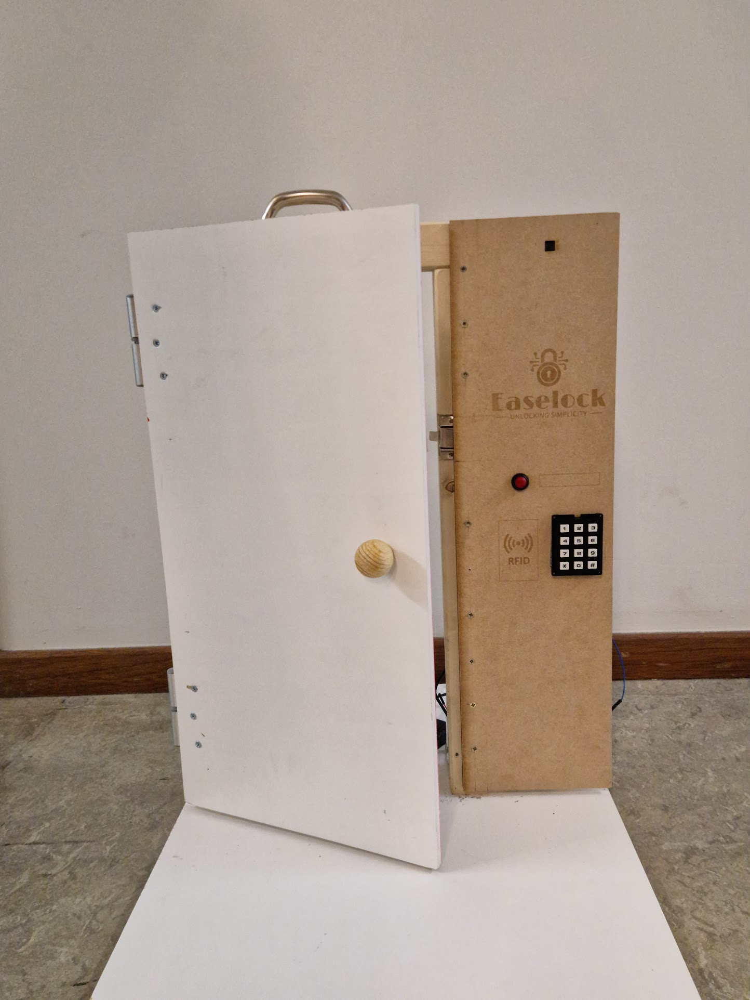
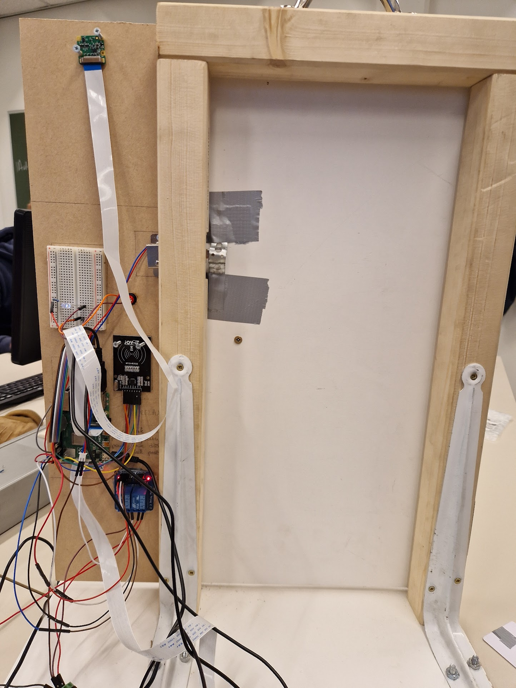

Easelock
Problem
Conventional door locks lack secure digital access control, traceability, and flexibility, relying on physical keys with no real-time visibility or logging.
Approach
Designed an embedded IoT access system using RFID-based authentication with keypad fallback, integrating sensors, actuators, and a camera for event-driven monitoring. Implemented a microcontroller-based architecture with app-controlled authorization management, access logging, and remote actuation, enabling secure, keyless entry and delivery access.

